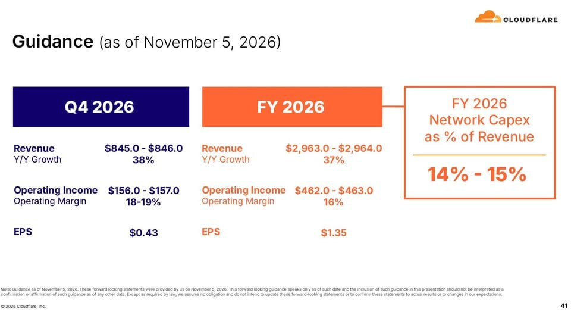

過去 26 小時共 4 則，全部是實質內容，沒有業配。重點是 Cloudflare Q3 財報的長篇筆記加一張財測圖，另外兩則都跟 Nvidia 有關：H200 卡在香港進不了中國，還有黃仁勳被指為中國間諜行動目標的報導。
cloudflare q3
rev 7.83 億美元增速四年高，營益率 17.5% 創高，GAAP 獲利從最晚 2028 提前到今年 Q4。合約從訂閱確立轉向用量，用越多付越多。近期頻傳的資安問題會是公司的加速推力
- 成長曲線在 2025 年 10 月、2026 年 7 月、今年 10 月初連續三次上彎
- agent 工作負載正在把需求導向用多少付多少的 serverless/isolate 架構
- AI 挖出舊漏洞，安全需求從 AI 公司外溢到銀行、政府、製造業等所有產業，壓力直接落在第一代 Zero Trust、硬體 DDoS、VPN 與純 CDN 廠商身上
- Act IV（爬蟲效率付費、pay-per-crawl、微支付）首入帳，Cloudflare 想當 agent 與內容方之間的收費站
- 大客戶淨增 308 家、全年近千家。美國 52% 營收 +44%，EMEA 26% +32%，APAC 14% +32%
- Q4 往上 guide 主因為客戶 pool of funds 燒得比預期快、提早續約、續約金額更大，而且是長尾多客戶、非單一集中事件
- 營益率擴張主要來自 Workers 加速
- agent 時代需要毫秒啟動、零閒置計費，isolate 架構原本是為地理分散設計，現在在高密度 agent 對 agent 場景有優勢。Prince 自稱是 first agentic cloud
- 過去 14 天公開 6 個史上最嚴重漏洞（含 PHP 舊漏洞），Prince 說更多已私下揭露、尚未公開，預計接下來兩年都要抓漏
- 客戶在 RFP 後段撕掉第一代 Zero Trust 廠商的案子，理由是對方沒把 agent 身分與人類使用者分開設計
- agent 流量暴增讓純 CDN 業者帳單上升但客戶沒得到好處，Cloudflare 則提供封鎖且不計費，對純 CDN 商業模式發出挑戰
#6538（無文字，圖片）：

Cloudflare 財報簡報第 41 頁「Guidance（as of November 5, 2026）」：Q4 2026 營收 8.45–8.46 億美元（年增 38%）、營業利益 1.56–1.57 億（營益率 18–19%）、EPS 0.43；FY2026 營收 29.63–29.64 億（年增 37%）、營業利益 4.62–4.63 億（16%）、EPS 1.35；FY2026 網路資本支出占營收 14–15%。
講解
對照 11/5 公司新聞稿（SEC 8-K）：Q3 營收 7.825 億美元、年增 39%，數字吻合。但要注意「營益率 17.5%」是非 GAAP（排除股票薪酬等），GAAP 口徑本季其實是營業虧損 6,790 萬、營益率 −8.7%，GAAP 淨損 3,410 萬美元（每股 −0.10），比去年同期還差，部分原因是本季 1,100 萬美元重整費用（公司正轉向「agentic AI-first 營運模式」並裁員，年初至今重整費用累計 1.6 億）。圖上 Q4 財測的營業利益與 EPS 也都是非 GAAP。所以「GAAP 獲利提前到今年 Q4」是貼文轉述的說法（可能來自法說會），新聞稿裡查不到這個承諾；大客戶淨增 308 家、各區域成長率同樣不在新聞稿中，無法獨立核實。新聞稿另揭露自由現金流 8,210 萬（營收 10%）、cRPO 年增 37%。
機制上，這篇的核心論點是商業模式從「訂閱」轉向「用量計價」：Cloudflare Workers 用 V8 isolate（同一程序內隔離的輕量執行環境）而非容器或虛擬機，啟動是毫秒級、閒置不收錢，很適合 AI agent 那種大量、短暫、突發的呼叫。用量制的好處是客戶用得越兇營收自動跟上，「pool of funds 燒得比預期快、提早續約」就是這種模式的訊號；代價是營收波動也會變大。資安面，AI 讓找舊漏洞的成本大幅下降，需求擴散到各產業，Cloudflare 把自己定位成取代傳統 VPN、硬體 DDoS 設備的雲端方案。pay-per-crawl 則是讓網站向 AI 爬蟲收費，Cloudflare 從中抽成當「收費站」，目前才首次入帳，規模還很小。
forget about chinese market bro
講解
路透 11/5 獨家：約 60 萬顆 Nvidia H200 堆在香港，因為北京遲遲不批准大規模進口到中國大陸。過去幾個月只放行少量，部分大型網路公司各拿到約 1 萬顆；The Information 7 月曾報導北京總核准量可能不到 20 萬顆。原因是北京不想更依賴美國技術、要扶植國產晶片（雖然性能還追不上）。Nvidia 財務長 Kress 8 月說 H200 對中國銷售不到資料中心營收 1%，Nvidia 對 10 月季的財測已假設中國資料中心營收為零。也就是說，華府即使放行出口，北京那端也卡住了，這就是貼文「別想中國市場了」的意思。Nvidia、阿里、騰訊、字節、中國工信部都未回應；另有中間商以高價在中國轉售整機。Nvidia 11/5 股價跌 9.3%，但 CNBC 認為主因是期中選舉結果與高通財測疲弱，不只這則新聞。
川普早就知道 回頭看一些評論覺得.. 滿有意思的
講解
源頭是紐約時報 10/29 報導：美國情報官員據稱認定，新加坡資料中心公司 Megaspeed 一名與黃仁勳關係密切的高層 Alice Huang 向北京傳遞資訊；報導並稱川普曾聽取簡報但沒採取行動。Nvidia 回應黃仁勳每年接觸數千名客戶高層，與她的互動「並不罕見」；中國外交部稱是「毫無根據的抹黑」。川普 10/31 則說「我不知道這件具體的事」，但會「仔細查」，並表示尊重黃仁勳、願意保留他當顧問「除非發現相反情況」。注意：「川普早就知道」是根據紐時說法，與川普本人「不知道」的說法互相矛盾，目前沒有第三方能證實哪一邊；指控本身也是匿名情報來源，尚未有官方證據公開。貼文「回頭看一些評論」沒有具體指出是哪些評論，屬作者個人觀點。